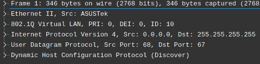
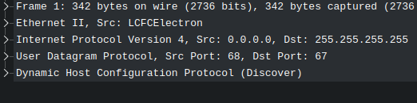

So, the FBI released another bunch of the Epstein files: hundreds of the PDF documents with
the emails, flight logs, chat extracts and photos - too much for me to handle, especially
when I don't have a powerful GPU that can run advanced multimodal LLMs.
But I have plenty of space and these preparations were really helpful:
Split PDF documents into text and pictures.
Detect faces: find photos with faces.
Generate vectors for faces and cluster them.
Step
Number of files
Duration
Splitting PDFs
346485 PDFs → 557466 pngs
~10 minutes
Finding faces
557466 pngs -> 1022 pngs with faces
~16 hours
Clustering faces
1022 pngs -> 92 clusters
~3 minutes
Both face detection and clustering are straightforward and could be done by simply using
face_recognition (pypi) and
DBSCAN from scikit-learn.
The only tuning I did was adding n_jobs=-1 to let DBSCAN use all the CPU cores.
Initial issues with the scripts
The first version of the script was not very good. It had some obvious things that could be
considered issues, like copying files instead of symlinking, but I had reasons to do it that
way. But there were things I didn't notice:
Same person appears multiple times on one picture: mirrors,
newspaper and document scans
Too many false positives, when some random spots were mistaken for faces
Keeping findings in the JSONs made it difficult to analyze and serve the results
So now I have a better version: instead of copying files and writing the metadata to JSONs,
it stores those in an SQLite database, without copying or symlinking the files. I use the
database to make queries like "what people appear on the same photos as this person?"
It's quite easy to isolate an Ollama instance: just run it inside a firejail sandbox with
network disabled. If you need a script that interacts with the model, you can run it in
the same sanbox wit the "--join" flag. But what if you want to make Ollama available for
other applications like IDEs or agent, while keep it isolated from the internet?
Docker
The simplest way to achieve this is to run Ollama inside a docker container with an internal
network (that will block internet access by default) and create a socat gateway which can see
both the internal and host networks.
Less overhead, but more manual setup and it also requires extra permissions to apply the firewall
configurations. While the firejail profile stays simple, you will also need a netfilter ruleset
and the script that sets up and removes a bridge interface.
OLLAMA_HOST=10.10.20.2 firejail --profile=./ollama.profile ./ollama serveStarting ollama: same as before, but with the custom host
The script is not universal, so pay attention to what you paste and check if it interferes
with your existing network.
#!/bin/bash
set -euo pipefail
IFNAME="enp1s0f0"
BRNAME="firebridge"
BRADDR="10.10.20.2"
if [[ "$1" == "up" ]]; then
brctl addbr $BRNAME
ip addr add 10.10.20.1/24 dev $BRNAME
ip link set $BRNAME up
iptables -t nat -A POSTROUTING -o $IFNAME -s 10.10.20.0/24 -j MASQUERADE
iptables -t nat -A OUTPUT -m addrtype --src-type LOCAL --dst-type LOCAL -p tcp --dport 11434 -j DNAT --to-destination $BRADDR:11434
iptables -t nat -A POSTROUTING -m addrtype --src-type LOCAL --dst-type UNICAST -p tcp -d $BRADDR --dport 11434 -j MASQUERADE
sysctl -w net.ipv4.conf.all.route_localnet=1
elif [[ "$1" == "down" ]]; then
iptables -t nat -D POSTROUTING -o $IFNAME -s 10.10.20.0/24 -j MASQUERADE
iptables -t nat -D OUTPUT -m addrtype --src-type LOCAL --dst-type LOCAL -p tcp --dport 11434 -j DNAT --to-destination $BRADDR:11434 2>/dev/null
iptables -t nat -D POSTROUTING -m addrtype --src-type LOCAL --dst-type UNICAST -p tcp -d $BRADDR --dport 11434 -j MASQUERADE 2>/dev/null
sysctl -w net.ipv4.conf.all.route_localnet=0
ip link set $BRNAME down
brctl delbr $BRNAME
else
echo "Usage: $0 {up|down}"
exit 1
fibridge.sh
Script to set up/clean up a bridge and packet forwarding.
A strict firejail profile: use custom home folder and custom network configuration:
name ollama
net firebridge
ip 10.10.20.2
netfilter ./ollama.netfilter
private /home/arusakov/devel/c2c/local-agent/local-agent-firejail/ollama_home
ollama.profile
Firejail profile to run an isolated Ollama instance.
Netfilter profile: block everything except the default ollama port:
*filter
:INPUT DROP [0:0]
:FORWARD DROP [0:0]
:OUTPUT DROP [0:0]
-A INPUT -i lo -j ACCEPT
-A INPUT -m conntrack --ctstate RELATED,ESTABLISHED -j ACCEPT
-A INPUT -s 10.10.20.1 -p tcp --dport 11434 -m conntrack --ctstate NEW -j ACCEPT
-A OUTPUT -o lo -j ACCEPT
-A OUTPUT -d 10.10.20.1 -j ACCEPT
-A OUTPUT -m conntrack --ctstate RELATED,ESTABLISHED -j ACCEPT
COMMITollama.netfilter
Netfilter ruleset for the firejail profile.
It's always better to have a machine that is completely disconnected from the internet when
you work on some sensitive data. Configuring a firewall ruleset or a virtual machine with a
proper passthrough settings is also good option. But if it's not a top secret intelligence data,
there is a simpler option with an acceptable overhead and privacy level: firejail with a shared
network:
Quick example: firejail with network disabled
Ollama sandbox and client share a network, so they can only connect to each other:
# Let ollama to save models into our home directory
export OLLAMA_MODELS=/path/to/our/ml-models/ollama/
# Installing models (if needed):
path/to/ollama pull llava3 # Or llama3.2-vision, gemma3, etc
# Start ollama in a sandbox with a custom sandbox name "ollama"
firejail --noprofile --net=none --name=ollama path/to/ollama serve
# Join an existing sandbox and sending a command to ollama
firejail --noprofile --net=none --join=ollama \
curl -X POST http://localhost:11434/api/chat \
-H "Content-Type: application/json" \
-d '{...}'
ollama-run.txt
Installing ollama, no network restrictions here.
Using MAX messenger for an autopsy is a kind of special thing now and while the
messenger itself could be boring and unoriginal, the process could be still
educational.
Comparing two versions
The defpackage folder after the jadx still contains small files with random garbage
names and you typically cannot do much about it. Identifying files or classes
that are identical except for their names is simple, but the sheer volume makes
manual or semi-automated (diff between each two files) makes the approach
impractical. My approach, while still straightforward, was quite effective:
Load all files from both versions into memory: it was still less than
several gigabytes. This step can be skipped if you have a quick enough SSD.
Calculate locality sensitive hash and group candidates based on the hash
similarity.
Use a more precise similarity metric to confirm matches.
Comparison of the two defpackage folders with ~30000 files now takes roughly a minute,
but without LSH filtering and parallelizing the same task takes more than an hour.
#!/usr/bin/env python3
import json
import os
import rapidfuzz
import sys
from datasketch import MinHash, MinHashLSH
from multiprocessing import Pool, cpu_count
nprocs = cpu_count()
verA = [os.path.join(sys.argv[1], x) for x in os.listdir(sys.argv[1])]
verB = [os.path.join(sys.argv[2], x) for x in os.listdir(sys.argv[2])]
def calcMH(data, num_perm=128, shingle_size=5):
m = MinHash(num_perm=num_perm)
for i in range(len(data) - shingle_size + 1):
shingle = data[i : i + shingle_size]
m.update(shingle)
return m
print(f"Loading all files into memory: {len(verA + verB)}", flush=True)
content = {p: open(p, "rb").read() for p in verA + verB}
print("Calculating hashes", flush=True)
pairs = {}
lsh = MinHashLSH(threshold=0.5, num_perm=128)
with Pool(nprocs) as pool:
hashes = pool.map(calcMH, [content[p] for p in verA + verB])
for i, h in enumerate(hashes):
if i < len(verA):
lsh.insert(verA[i], h)
continue
matches = lsh.query(h)
if matches:
pairs[verB[i - len(verA)]] = matches
print("Performing comparisons")
def fileInfo(path):
return {
"path": path,
"size": os.path.getsize(path)
}
def bestMatch(data):
verB = data[0]
toCompare = data[1]
result = (None, 0)
for tc in toCompare:
tcRate = rapidfuzz.fuzz.ratio(content[verB], content[tc])
if tcRate > result[1]:
result = (tc, tcRate)
return verB, result[0], result[1]
matches = []
with Pool(nprocs) as pool:
matches = pool.map(bestMatch, pairs.items())
result = []
for verB, verA, rate in matches:
result.append(
{
"rate": rate,
"versions": [
fileInfo(verA),
fileInfo(verB),
]
}
)
with open(sys.argv[3], "w") as f:
json.dump(result, f)
print("Done")
find_matches.py contents.
Hints on real class names
Obfuscators can shuffle the code and randomize the names, yet the subtle clues that
reveal the true class and field names:
public final String toString() {
return "NetworkState(isConnected=" + this.a + ", isValidated=" + this.b + ", isMetered=" + this.c + ", isNotRoaming=" + this.d + ')';
}toString method of the class "xn9" of Max 25.8.1
And "xn9.java" becomes "NetworkState.java", "a" becomes "isConnected" and so on. And
don't forget of name collisions when classes from different packages end up in the
same defpackage.
I moved to the Redeer C2, community edition with Sailfish OS. Not 100% voluntarily,
but not against my will either. My phone's touch screen just broke, and I needed a
replacement.
I still think that Sailfish OS is a nice system, and its user interface is the only
mobile Linux UI that is customer-ready. Unfortunately, the system lacks many common
applications, such as a video player (the music player exists and is okay for my
needs) or a YouTube client. So my plan was to download videos with yt-dlp and view \
them locally.
Part 1: yt-dlp Python
What could be simpler than downloading and running yt-dlp from
github or installing from pip? But
my phone only had Python 3.8 (python3-base-3.8.18) and yt-dlp dropped support for it
almost a year ago (#1132).
I was not looking for an easy way, so I decided to cross-compile python myself. But
I was not looking for a dirty way either, so I decided to create an RPM package that
could be installed independently from the original Python and removed later if
needed.
Building and packaging
Let's assume you have already followed the
Sailfish SDK installation instructions
and have sfdk installed. Make sure to do all the stuff within a workspace,
because Sailfish SDK uses a VirtualBox VM or Docker container as a build host and
mounts workspace directory there.
That should be enough: a somewhat optimized, somewhat stripped, complete python
distribution ready for common tasks including downloading youtube videos with
yt-dlp.
Name: Python
Summary: Version 3.13 of the python interpreter
Version: 3.13.6
Release: 1
License: Python-2.0.1
Source0: %{name}-%{version}.tgz
URL: https://www.python.org
Requires: openssl readline libuuid xz
Buildrequires: openssl-devel readline-devel libuuid-devel xz-devel
%description
Python is an interpreted, interactive, object-oriented programming language. This package contains
most of the need a programmable interface and standard Python modules.
%prep
tar -xvf %{name}-%{version}.tgz
%build
mkdir build
cd build
../%{name}-%{version}/configure --prefix=/usr/local --enable-optimizations --with-openssl=/usr/
make %{?_smp_mflags}
%install
cd build
DESTDIR=$RPM_BUILD_ROOT make install
%files
%defattr(-,root,root,-)
/usr/local/
The RPM spec unpacks, compiles, and prepares a large package
Part 2: yt-dlp
With the latest stable Python and pip, it's enough to just install it from pip:
MAX messenger is a government-forced Russian messenger that is planned to replace
WhatsApp, Facebook messenger and other Western propaganda spreading machines. And
the Telegram too. While there is nothing interesting about the interface, there
could be something interesting inside so I installed the app on my Android emulator
and started to explore it.
TL;DR
Nothing unexpected, yet another messenger with an unclear future. Not a KGB trojan
surveillance app, just as private as any other messenger which is not focused on
protecting your data. It also needs a working phone number to register, so you can
forget about anonymity.
The only somewhat interesting thing is that it has a TamTam messenger inside, so
it's probably based on a TamTam codebase.
Package details
Version information
Origin
RuStore
Package
ru.oneme.app
Version
25.7.1
Package content
md5:d88c78a92d75f0319af1a95b59e3867e
23M
base.apk
md5:7ef573467d338b6411ceb80cd278f9cb
2.8M
split_config.mdpi.apk
md5:0d978dc58e071136cddc8a815311154f
209K
split_config.ru.apk
md5:b3c75d266a1f1a55833cb9f052b9e075
26M
split_config.x86_64.apk
Permissions
Like any other messenger, it can read and write media and storage, use camera and
microphone, prevent device lock, use vibration or show full screen intents, update app
badges and settings on different android-based platforms.
The messenger uses open source libraries, some of them are well known and widely used
in Java (Apache commons, Apache http, FasterXML, org/JSON, LZ4-java, OkHTTP3, WebRTC,
etc). The list below contains specific or not so famous libraries:
Library
Description
Sources
Odnoklassniki (ru/ok)
android
A somewhat lower-level code (api, http, compression, etc)
N/A
messages
Reused code from OK.ru messenger
onechat
Utility classes for the reactions view
tamtam
Some Russian messenger
tracer
OK-Tech service for profiling and failure reporting, closed source.
At least, I need to make a note on how to use openconnect even without gui. Sailfish
has an openconnect client by default, but it doesn't have default vpn scripts:
# openconnect https://somehost.com/?somekey
...
/bin/sh: /etc/openconnect/vpnc-script: not found
Script '/etc/openconnect/vpnc-script' returned error 127
/bin/sh: /etc/openconnect/vpnc-script: not found
Script '/etc/openconnect/vpnc-script' returned error 127
...
But ones from the
OpenConnect's git repository
work well and copying them to /etc/openconnect directory solves an issue. Of course, if
you don't want to put self generated files to the system directories, you can set the
script location:
Good thing that it works by itself, bad thing that it is not integrated with the UI,
so I had to try other options:
Automatic cookie
I expected that it will fetch the cookie and certificate from credentials, but it
didn't work, I kept getting those getaddrinfo error messages.
Manual cookie
If connman cannot fetch the cookie, I should do it myself:
# openconnect --authenticate "https://somevpn.somedomain.com/?somesecretkey"
POST https://somevpn.somedomain.com/?somesecretkey
Connected to 23.32.165.3:443
SSL negotiation with somevpn.somedomain.com
Connected to HTTPS on somevpn.somedomain.com with ciphersuite TLSv1.2-ECKGB-ECFSB-AESMI6-WTF-OMG384
XML POST enabled
Please enter your username.
Username:
POST https://somevpn.somedomain.com/auth
Please enter your password.
Password:
POST https://somevpn.somedomain.com/auth
COOKIE='openconnect_strapkey=SGV5ISBBcmVudCB5b3Ugc25lYWt5IGJhc3RhcmQ/IEhlbGxvIHRoZXJlCg==; webvpn=cHdnZW4gLTEgb3Igc29tZXRoaW5nCg=='
HOST='147.237.7.27'
CONNECT_URL='https://somevpn.somedomain.com/'
FINGERPRINT='pin-sha256:WWVzLiBBIGZpbmdlcnByaW50Cg=='
And it worked! Just pay attention when copy-pasting text from the fingerterm, as it
will add spaces where the text was broken by the side of the screen.
I'm one of the rare owners of a Sailfish OS device. I had an original Jolla, a Sony
XPeria device with Sailfish and now I use Redeer C2. For me it is an only end-user
ready Linux mobile OS-es, but one thing kept bothering me - an OpenVPN (ocserv)
connection to my home network.
The problem was unclear: VPN connection kept flashing while trying to connect but
each attempt ended with "Connection problem" error. No notifications, no detailed
error messages. What is wrong with you? It worked on Android with the AnyConnect
client, it worked on a generic Linux with terminal client for "openconnect". And
the terminal client worked well even on the same Sailfish OS. What could be wrong?
Ok. Let's look in the logs:
[root@JollaC2 defaultuser]# journalctl -r | grep -i vpn
...
JollaC2 connman-vpnd[2317]: Failed to open HTTPS connection to my-vpn.somevds.ch/?somesecretkey
JollaC2 lipstick[2684]: [D] unknown:0 - VPN connection property changed: "State" QVariant(QString, "configuration") "/net/connman/vpn/connection/https___my_vpn_somevds_ch__somesecretkey_Sailfish OS_org" "Home"
JollaC2 connman-vpnd[2317]: getaddrinfo failed for host 'my-vpn.somevds.ch/?somesecretkey': Name or service not known
JollaC2 connman-vpnd[2317]: POST https://my-vpn.somevds.ch/?somesecretkey
...
The culprit! It thinks that my whole url with a path and a parameter. A bit weird,
because my OpenConnect server uses camouflage mode and I don't want to disable it,
but connman doesn't know how to use it. I'll try to find a workaround next time.
I bought a Banana Pi BPI-R3 router, installed an OpenWRT firmware, but couldn't get
an IP address from my provider, green.ch. I tried to use the same MAC address, but
it didn't work so I had to go deeper and what is the simplest way to debug such an
issue? Compare the dumps and see the difference, of course. So I connected WAN port
of a working router to my laptop and looked at DHCP packets, then I did the same for
my non-working router and saw a difference:

Working DHCP request

Ignored DHCP request
So, the only difference was that the provider expected packet to be sent from a
802.1q vlan with ID 10. I've added it to the network config (/etc/config/network)
and everything worked.
config device
option type '8021q'
option ifname 'wan'
option vid '10'
option name 'vlan10'
config interface 'wan'
option proto 'dhcp'
option device 'vlan10'
option hostname '*'